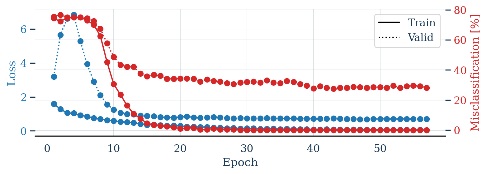
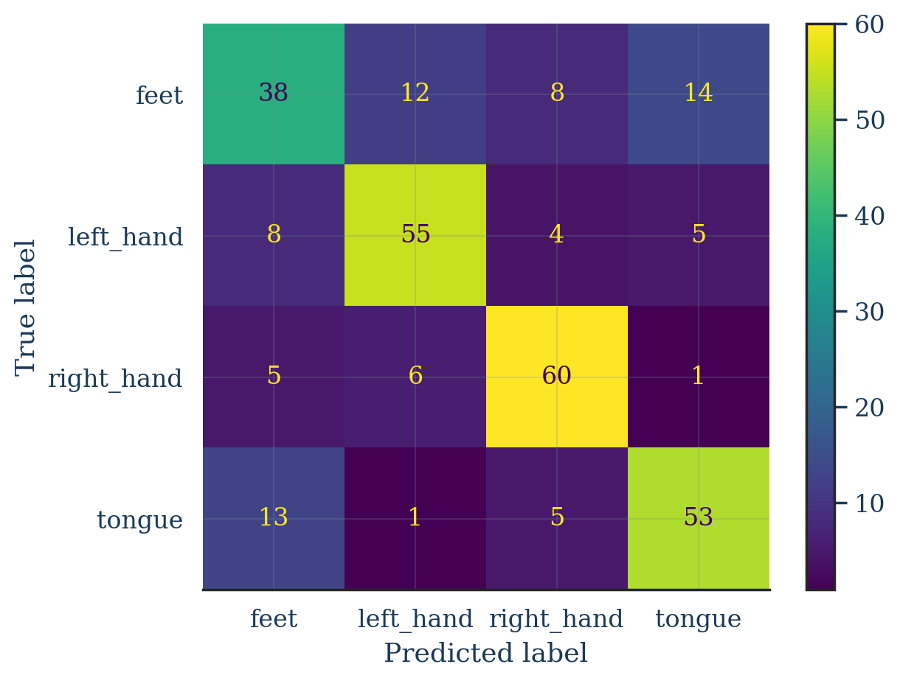

# Run once. Safe to skip if these are already installed in your environment.
%pip install --upgrade braindecode moabb -q --progress-bar offShallow ConvNet for EEG Decoding
braindecode
eeg
pytorch
bci
Implementing the Shallow FBCSP Net (Schirrmeister et al., 2017) with braindecode on BCI Competition IV 2a.

Shallow ConvNet for EEG Decoding — Schirrmeister et al. (2017)
This notebook implements the Shallow ConvNet (“Shallow FBCSP Net”) architecture from:
Schirrmeister, R. T., Springenberg, J. T., Fiederer, L. D. J., Glasstetter, M., Eggensperger, K., Tangermann, M., Hutter, F., Burgard, W. & Ball, T. (2017). Deep learning with convolutional neural networks for EEG decoding and visualization. Human Brain Mapping, 38: 5391–5420. https://doi.org/10.1002/hbm.23730
We use the braindecode library (which ships the original authors’ reference implementation as ShallowFBCSPNet) rather than re-deriving the layers by hand. The point of the notebook is to (1) build a correct, runnable trial-wise decoding pipeline, and (2) document how each line of code maps back to the architecture diagram and the design choices argued for in the paper.
Why this architecture exists (the one-paragraph version)
The Shallow ConvNet was deliberately designed to mimic the Filter Bank Common Spatial Patterns (FBCSP) pipeline — the method that won several BCI competitions — but as a single end-to-end trainable network. FBCSP does: band-pass filter → spatial filter (CSP) → compute log-variance (band power) → classify. The Shallow ConvNet reproduces this as:
| FBCSP step | Shallow ConvNet layer |
|---|---|
| Band-pass filtering | Temporal convolution (40 filters, length 25) |
| CSP spatial filtering | Spatial convolution (across all channels) |
| Squaring + variance over time | Square non-linearity → mean pooling |
| log-variance feature | Log non-linearity |
| Linear classifier | Conv classifier + softmax (4 classes) |
The square → mean-pool → log sequence is the network’s way of computing log band-power over a window, which is exactly the FBCSP feature. That is the single most important idea in this model.
The architecture, layer by layer
This is the diagram from the paper (Figure 2), annotated with the tensor shapes braindecode uses for BCI Competition IV 2a (22 EEG channels, ~4.5 s windows at 250 Hz → ~1125 time samples):
Input (batch, 22 channels, ~1125 time)
│
├─ Temporal convolution 40 filters, kernel = (25, 1) "40 Units, length 25"
│ learns a band-pass-like filter bank along time
│
├─ Spatial convolution 40 filters, kernel = (1, 22) "all electrodes, all prev filters"
│ learns CSP-like spatial filters across every channel
│
├─ Batch normalisation (stabilises training; not in original FBCSP)
│
├─ Square non-linearity x → x² "Square"
│
├─ Mean pooling kernel = (75, 1), stride = (15, 1) squaring + mean ≈ variance / band power
│
├─ Log non-linearity x → log(x) "Log" → completes log-variance feature
│
├─ Dropout (p = 0.5) regularisation
│
└─ Conv classifier + softmax 4 outputs Hand(L), Hand(R), Feet, Tongue/Restbraindecode.models.ShallowFBCSPNet implements exactly this, with these defaults (matching the paper): n_filters_time=40, filter_time_length=25, n_filters_spat=40, pool_time_length=75, pool_time_stride=15, conv_nonlin=Square, pool_mode="mean", activation_pool_nonlin=SafeLog, batch_norm=True, drop_prob=0.5.
0. Setup
Install braindecode (the model + dataset wrappers) and moabb (downloads the standard BCI benchmark datasets). Skorch + PyTorch come in as dependencies.
# Render plots at retina (high-DPI) resolution
%config InlineBackend.figure_format = 'retina'
import torch
from braindecode.util import set_random_seeds
# Reproducibility. The paper trains one model per subject; we follow the same convention.
seed = 20200220
cuda = torch.cuda.is_available()
device = "cuda" if cuda else "cpu"
set_random_seeds(seed=seed, cuda=cuda)
print(f"Using device: {device}")Using device: cuda1. Load the data — BCI Competition IV 2a
We use BCI Competition IV dataset 2a (MOABB id BNCI2014_001), one of the datasets evaluated in the paper. It is a 4-class motor-imagery task — left hand, right hand, feet, tongue — recorded with 22 EEG channels at 250 Hz, 9 subjects, 2 sessions each. This matches the four output classes shown in the figure (the paper’s “Rest” slot is “tongue” in this particular dataset).
Following the paper, we train one model per subject. Change subject_id to decode a different subject. MOABBDataset downloads and caches the recordings on first run.
from braindecode.datasets import MOABBDataset
subject_id = 3 # train a subject-specific model, as in the paper
dataset = MOABBDataset(dataset_name="BNCI2014_001", subject_ids=[subject_id])
dataset.description| subject | session | run | |
|---|---|---|---|
| 0 | 3 | 0train | 0 |
| 1 | 3 | 0train | 1 |
| 2 | 3 | 0train | 2 |
| 3 | 3 | 0train | 3 |
| 4 | 3 | 0train | 4 |
| 5 | 3 | 0train | 5 |
| 6 | 3 | 1test | 0 |
| 7 | 3 | 1test | 1 |
| 8 | 3 | 1test | 2 |
| 9 | 3 | 1test | 3 |
| 10 | 3 | 1test | 4 |
| 11 | 3 | 1test | 5 |
2. Preprocessing — “minimal”, end-to-end
A central claim of the paper is that ConvNets can decode from raw EEG with only minimal preprocessing, for a fair comparison against FBCSP. We apply exactly the steps the braindecode authors recommend for this dataset:
- Pick EEG channels only (drop EOG / stim).
- Convert V → µV (a fixed scaling so the network sees sensibly-scaled inputs).
- Band-pass 4–38 Hz — keeps the motor-relevant µ/β rhythms; the temporal conv then learns a finer filter bank within this band.
- Exponential moving standardisation — online per-channel mean/variance normalisation, the running-statistics scheme described in the paper so the model is robust to drift.
Preprocessing is applied in-place to the loaded recordings (not on-the-fly).
from numpy import multiply
from braindecode.preprocessing import (
Preprocessor, exponential_moving_standardize, preprocess,
)
low_cut_hz, high_cut_hz = 4.0, 38.0 # band-pass edges (Hz)
factor = 1e6 # V -> uV
factor_new, init_block_size = 1e-3, 1000 # exp. moving standardisation params
preprocessors = [
Preprocessor("pick_types", eeg=True, meg=False, stim=False),
Preprocessor(lambda d: multiply(d, factor)),
Preprocessor("filter", l_freq=low_cut_hz, h_freq=high_cut_hz),
Preprocessor(exponential_moving_standardize,
factor_new=factor_new, init_block_size=init_block_size),
]
preprocess(dataset, preprocessors, n_jobs=-1)/usr/local/lib/python3.12/dist-packages/braindecode/preprocessing/preprocess.py:78: UserWarning: apply_on_array can only be True if fn is a callable function. Automatically correcting to apply_on_array=False.
warn(
/usr/local/lib/python3.12/dist-packages/braindecode/preprocessing/preprocess.py:76: UserWarning: Preprocessing choices with lambda functions cannot be saved.
warn("Preprocessing choices with lambda functions cannot be saved.")| BaseConcatDataset | |
|---|---|
| Type | BaseConcatDataset of RawDataset |
| Recordings | 12 |
| Total samples | 1160820 |
| Sfreq* | 250.0 Hz |
| Channels* | 22 (22 EEG) |
| Ch. names* | Fz, FC3, FC1, FCz, FC2, FC4, C5, C3, C1, Cz, ... (+12 more) |
| Montage* | head |
| Duration* | 386.9 s |
| * from first recording | |
| Description | 12 recordings × 3 columns [subject, session, run] |
3. Cut the continuous signal into trials (windows)
The classifier sees fixed-length trial windows, not the continuous recording. create_windows_from_events slices around each cue marker. We include 0.5 s before the trial onset — the braindecode authors note this is often beneficial for this dataset (it lets the temporal conv see the pre-movement baseline). Each window becomes one (channels × time) example for the network — this is trial-wise decoding (one label per window), the simpler of the two training modes in the paper (the other being cropped/dense decoding).
from braindecode.preprocessing import create_windows_from_events
trial_start_offset_seconds = -0.5
sfreq = dataset.datasets[0].raw.info["sfreq"]
assert all(ds.raw.info["sfreq"] == sfreq for ds in dataset.datasets)
trial_start_offset_samples = int(trial_start_offset_seconds * sfreq)
windows_dataset = create_windows_from_events(
dataset,
trial_start_offset_samples=trial_start_offset_samples,
trial_stop_offset_samples=0,
preload=True,
)
print(f"Sampling rate: {sfreq} Hz")
print(f"Number of windows (trials): {len(windows_dataset)}")
X0, y0, _ = windows_dataset[0]
print(f"One window shape (channels, time): {X0.shape}, label: {y0}")Sampling rate: 250.0 Hz
Number of windows (trials): 576
One window shape (channels, time): (22, 1125), label: 14. Train / validation split
Dataset 2a has a dedicated training session and evaluation session per subject. We follow the official protocol and the paper: train on session 0train, evaluate on the held-out 1test session. This is a true held-out evaluation, not a random split.
splitted = windows_dataset.split("session")
train_set = splitted["0train"]
valid_set = splitted["1test"]
print(f"Train windows: {len(train_set)} | Valid windows: {len(valid_set)}")Train windows: 288 | Valid windows: 2885. Build the Shallow ConvNet
We instantiate braindecode’s ShallowFBCSPNet. Its default constructor values are exactly the hyperparameters from the paper, so we only need to tell it the shape of our data:
n_chans— number of EEG channels (22 here),n_outputs— number of classes (4),n_times— window length in samples,final_conv_length="auto"— let braindecode size the final classification conv so it collapses the remaining time axis to a single prediction per trial.
The architecture-defining defaults it fills in for us:
| Constructor arg | Default | Role in the paper’s design |
|---|---|---|
n_filters_time |
40 | temporal filter bank size |
filter_time_length |
25 | temporal kernel length (paper used 25, not 10 like the deep net) |
n_filters_spat |
40 | spatial (CSP-like) filters |
pool_time_length |
75 | mean-pool window |
pool_time_stride |
15 | mean-pool stride |
conv_nonlin |
Square |
the squaring non-linearity |
pool_mode |
"mean" |
mean pooling (vs L2) |
activation_pool_nonlin |
SafeLog |
the log non-linearity |
batch_norm |
True |
batch norm after the conv layers |
drop_prob |
0.5 | dropout before the classifier |
from braindecode.datautil import infer_signal_properties
from braindecode.models import ShallowFBCSPNet
sig_props = infer_signal_properties(train_set, mode="classification")
print(sig_props)
model = ShallowFBCSPNet(
n_chans=sig_props["n_chans"],
n_outputs=sig_props["n_outputs"],
n_times=sig_props["n_times"],
final_conv_length="auto",
)
if cuda:
model = model.cuda(){'n_times': 1125, 'n_chans': 22, 'n_outputs': 4}Inspect the layers and confirm they match the figure
Printing the module shows the exact Sequential braindecode builds. Read it top-to-bottom against the diagram in section “The architecture, layer by layer”:
ensuredims/dimshuffle— reshape the(batch, channels, time)input into the 4-D layout the convs expect.conv_time_spat(aCombinedConv) — the temporal convolution (40×length-25 filters) followed by the spatial convolution across all channels. These are the two split first layers (FBCSP’s band-pass + CSP).bnorm— batch normalisation.conv_nonlin_exp— the Square non-linearity (x²).pool— mean pooling, kernel 75, stride 15.pool_nonlin_exp— the Log non-linearity. Square → mean → log together = log band-power.drop— dropout 0.5.final_layer.conv_classifier— the conv that produces the 4 class logits, thensqueeze→ softmax happens inside the loss.
print(model)=================================================================================================================================================
Layer (type (var_name):depth-idx) Input Shape Output Shape Param # Kernel Shape
=================================================================================================================================================
ShallowFBCSPNet (ShallowFBCSPNet) [1, 22, 1125] [1, 4] -- --
├─Ensure4d (ensuredims): 1-1 [1, 22, 1125] [1, 22, 1125, 1] -- --
├─Rearrange (dimshuffle): 1-2 [1, 22, 1125, 1] [1, 1, 1125, 22] -- --
├─CombinedConv (conv_time_spat): 1-3 [1, 1, 1125, 22] [1, 40, 1101, 1] 36,240 --
├─BatchNorm2d (bnorm): 1-4 [1, 40, 1101, 1] [1, 40, 1101, 1] 80 --
├─Square (conv_nonlin_exp): 1-5 [1, 40, 1101, 1] [1, 40, 1101, 1] -- --
├─AvgPool2d (pool): 1-6 [1, 40, 1101, 1] [1, 40, 69, 1] -- [75, 1]
├─SafeLog (pool_nonlin_exp): 1-7 [1, 40, 69, 1] [1, 40, 69, 1] -- --
├─Dropout (drop): 1-8 [1, 40, 69, 1] [1, 40, 69, 1] -- --
├─Sequential (final_layer): 1-9 [1, 40, 69, 1] [1, 4] -- --
│ └─Conv2d (conv_classifier): 2-1 [1, 40, 69, 1] [1, 4, 1, 1] 11,044 [69, 1]
│ └─SqueezeFinalOutput (squeeze): 2-2 [1, 4, 1, 1] [1, 4] -- --
│ │ └─Rearrange (squeeze): 3-1 [1, 4, 1, 1] [1, 4, 1] -- --
=================================================================================================================================================
Total params: 47,364
Trainable params: 47,364
Non-trainable params: 0
Total mult-adds (Units.MEGABYTES): 0.01
=================================================================================================================================================
Input size (MB): 0.10
Forward/backward pass size (MB): 0.35
Params size (MB): 0.04
Estimated Total Size (MB): 0.50
=================================================================================================================================================# Optional: a richer summary with output shapes per layer (requires torchinfo).
try:
from torchinfo import summary
summary(model, input_size=(1, sig_props["n_chans"], sig_props["n_times"]))
except ImportError:
print("Install torchinfo for a per-layer shape table: %pip install torchinfo")
n_params = sum(p.numel() for p in model.parameters())
print(f"Total trainable parameters: {n_params:,}")6. Train the network
EEGClassifier wraps the PyTorch model in a scikit-learn / skorch-style .fit() interface and handles the training loop, batching, callbacks and device placement.
Hyperparameters are the values the braindecode authors found to work well specifically for the shallow network (the deep net uses different ones):
- optimiser AdamW, learning rate
0.0625 × 0.01 = 6.25e-4, weight decay0, - batch size
64, - cosine-annealing LR schedule,
- cross-entropy loss with softmax over the 4 classes.
Note on epochs.
n_epochs = 100follows the paper, which trains long with early stopping. On this subject the model should reach roughly 68% accuracy on the held-out session (chance = 25%). At ~0.15 s/epoch on a GPU the whole run is well under a minute; early stopping (patience=10) will halt sooner if validation stops improving. Dropn_epochsback down only if you want a quick smoke test.
from skorch.callbacks import EarlyStopping, LRScheduler
from skorch.helper import predefined_split
from braindecode import EEGClassifier
# Authors' recommended values for the SHALLOW network:
lr = 0.0625 * 0.01
weight_decay = 0
batch_size = 64
n_epochs = 100 # paper-style run; ~0.15 s/epoch on GPU
classes = list(range(sig_props["n_outputs"]))
clf = EEGClassifier(
model,
criterion=torch.nn.CrossEntropyLoss,
optimizer=torch.optim.AdamW,
train_split=predefined_split(valid_set), # held-out session for validation
optimizer__lr=lr,
optimizer__weight_decay=weight_decay,
batch_size=batch_size,
callbacks=[
# provides train_accuracy + valid_accuracy in history (skorch logs only valid_acc by default)
"accuracy",
("lr_scheduler", LRScheduler("CosineAnnealingLR", T_max=max(1, n_epochs - 1))),
("early_stopping", EarlyStopping(patience=10, load_best=True)),
],
device=device,
classes=classes,
)
# y is None because labels are already inside the windows dataset.
clf.fit(train_set, y=None, epochs=n_epochs) epoch train_accuracy train_loss valid_acc valid_accuracy valid_loss lr dur
------- ---------------- ------------ ----------- ---------------- ------------ ------ ------
1 0.2569 1.5894 0.2465 0.2465 3.2008 0.0006 0.1586
2 0.2778 1.2837 0.2326 0.2326 5.6590 0.0006 0.1414
3 0.2535 1.0568 0.2500 0.2500 6.6241 0.0006 0.1294
4 0.2500 1.0391 0.2500 0.2500 6.8423 0.0006 0.1253
5 0.2500 0.9124 0.2500 0.2500 5.2845 0.0006 0.1304
6 0.2708 0.8502 0.2569 0.2569 3.9345 0.0006 0.1171
7 0.2986 0.7535 0.2743 0.2743 2.9099 0.0006 0.1164
8 0.3750 0.7064 0.3264 0.3264 2.1018 0.0006 0.1198
9 0.5486 0.6237 0.4236 0.4236 1.5593 0.0006 0.1159
10 0.6944 0.5926 0.5139 0.5139 1.2415 0.0006 0.1144
11 0.7639 0.5285 0.5660 0.5660 1.0708 0.0006 0.1234
12 0.8368 0.5111 0.5799 0.5799 0.9897 0.0006 0.1158
13 0.8924 0.4799 0.5799 0.5799 0.9666 0.0006 0.1225
14 0.9236 0.4115 0.6250 0.6250 0.9035 0.0006 0.1188
15 0.9549 0.3444 0.6424 0.6424 0.8731 0.0006 0.1177
16 0.9653 0.3647 0.6319 0.6319 0.8679 0.0006 0.1171
17 0.9722 0.3259 0.6389 0.6389 0.8123 0.0006 0.1193
18 0.9757 0.2949 0.6597 0.6597 0.7865 0.0006 0.1207
19 0.9826 0.3163 0.6597 0.6597 0.7796 0.0006 0.1153
20 0.9896 0.2911 0.6562 0.6562 0.8065 0.0006 0.1164
21 0.9861 0.2390 0.6562 0.6562 0.8427 0.0006 0.1174
22 0.9861 0.2366 0.6597 0.6597 0.7938 0.0006 0.1145
23 0.9965 0.2280 0.6771 0.6771 0.7801 0.0006 0.1121
24 0.9965 0.2216 0.6632 0.6632 0.7823 0.0005 0.1186
25 0.9896 0.1807 0.6736 0.6736 0.8127 0.0005 0.1145
26 0.9965 0.1889 0.6771 0.6771 0.7812 0.0005 0.1125
27 0.9965 0.1607 0.6875 0.6875 0.7578 0.0005 0.1107
28 0.9965 0.1718 0.6944 0.6944 0.7404 0.0005 0.1152
29 1.0000 0.1392 0.6840 0.6840 0.7477 0.0005 0.1137
30 1.0000 0.1450 0.6806 0.6806 0.7408 0.0005 0.1164
31 1.0000 0.1557 0.6771 0.6771 0.7318 0.0005 0.1130
32 1.0000 0.1162 0.6840 0.6840 0.7361 0.0005 0.1111
33 1.0000 0.1213 0.6701 0.6701 0.7498 0.0005 0.1176
34 1.0000 0.1359 0.6840 0.6840 0.7368 0.0005 0.1212
35 1.0000 0.0957 0.6875 0.6875 0.7309 0.0005 0.1509
36 1.0000 0.1157 0.6736 0.6736 0.7343 0.0005 0.1422
37 1.0000 0.1046 0.6806 0.6806 0.7329 0.0004 0.1395
38 1.0000 0.1005 0.6944 0.6944 0.7197 0.0004 0.1323
39 1.0000 0.0925 0.7049 0.7049 0.7088 0.0004 0.1306
40 1.0000 0.0873 0.7222 0.7222 0.7108 0.0004 0.1469
41 1.0000 0.0757 0.7083 0.7083 0.7175 0.0004 0.1326
42 1.0000 0.0944 0.7188 0.7188 0.7252 0.0004 0.1299
43 1.0000 0.0774 0.7257 0.7257 0.7324 0.0004 0.1535
44 1.0000 0.0827 0.7188 0.7188 0.7227 0.0004 0.1502
45 1.0000 0.0663 0.7188 0.7188 0.7072 0.0004 0.1636
46 1.0000 0.0802 0.7118 0.7118 0.6944 0.0004 0.1378
47 1.0000 0.0826 0.7153 0.7153 0.6822 0.0003 0.1259
48 1.0000 0.0641 0.7188 0.7188 0.6896 0.0003 0.1185
49 1.0000 0.0677 0.7153 0.7153 0.6989 0.0003 0.1180
50 1.0000 0.0634 0.7153 0.7153 0.7051 0.0003 0.1289
51 1.0000 0.0587 0.7188 0.7188 0.7024 0.0003 0.1149
52 1.0000 0.0661 0.7049 0.7049 0.6971 0.0003 0.1127
53 1.0000 0.0529 0.7188 0.7188 0.7003 0.0003 0.1162
54 1.0000 0.0552 0.7083 0.7083 0.7006 0.0003 0.1174
55 1.0000 0.0465 0.7049 0.7049 0.6986 0.0003 0.1156
56 1.0000 0.0656 0.7083 0.7083 0.6940 0.0003 0.1536
Stopping since valid_loss has not improved in the last 10 epochs.
Restoring best model from epoch 47.
<class 'braindecode.classifier.EEGClassifier'>[initialized]( module_================================================================================================================================================== Layer (type (var_name):depth-idx) Input Shape Output Shape Param # Kernel Shape ================================================================================================================================================= ShallowFBCSPNet (ShallowFBCSPNet) [1, 22, 1125] [1, 4] -- -- ├─Ensure4d (ensuredims): 1-1 [1, 22, 1125] [1, 22, 1125, 1] -- -- ├─Rearrange (dimshuffle): 1-2 [1, 22, 1125, 1] [1, 1, 1125, 22] -- -- ├─CombinedConv (conv_time_spat): 1-3 [1, 1, 1125, 22] [1, 40, 1101, 1] 36,240 -- ├─BatchNorm2d (bnorm): 1-4 [1, 40, 1101, 1] [1, 40, 1101, 1] 80 -- ├─Square (conv_nonlin_exp): 1-5 [1, 40, 1101, 1] [1, 40, 1101, 1] -- -- ├─AvgPool2d (pool): 1-6 [1, 40, 1101, 1] [1, 40, 69, 1] -- [75, 1] ├─SafeLog (pool_nonlin_exp): 1-7 [1, 40, 69, 1] [1, 40, 69, 1] -- -- ├─Dropout (drop): 1-8 [1, 40, 69, 1] [1, 40, 69, 1] -- -- ├─Sequential (final_layer): 1-9 [1, 40, 69, 1] [1, 4] -- -- │ └─Conv2d (conv_classifier): 2-1 [1, 40, 69, 1] [1, 4, 1, 1] 11,044 [69, 1] │ └─SqueezeFinalOutput (squeeze): 2-2 [1, 4, 1, 1] [1, 4] -- -- │ │ └─Rearrange (squeeze): 3-1 [1, 4, 1, 1] [1, 4, 1] -- -- ================================================================================================================================================= Total params: 47,364 Trainable params: 47,364 Non-trainable params: 0 Total mult-adds (Units.MEGABYTES): 0.01 ================================================================================================================================================= Input size (MB): 0.10 Forward/backward pass size (MB): 0.35 Params size (MB): 0.04 Estimated Total Size (MB): 0.50 =================================================================================================================================================, )In a Jupyter environment, please rerun this cell to show the HTML representation or trust the notebook.
On GitHub, the HTML representation is unable to render, please try loading this page with nbviewer.org.
<class 'braindecode.classifier.EEGClassifier'>[initialized]( module_================================================================================================================================================== Layer (type (var_name):depth-idx) Input Shape Output Shape Param # Kernel Shape ================================================================================================================================================= ShallowFBCSPNet (ShallowFBCSPNet) [1, 22, 1125] [1, 4] -- -- ├─Ensure4d (ensuredims): 1-1 [1, 22, 1125] [1, 22, 1125, 1] -- -- ├─Rearrange (dimshuffle): 1-2 [1, 22, 1125, 1] [1, 1, 1125, 22] -- -- ├─CombinedConv (conv_time_spat): 1-3 [1, 1, 1125, 22] [1, 40, 1101, 1] 36,240 -- ├─BatchNorm2d (bnorm): 1-4 [1, 40, 1101, 1] [1, 40, 1101, 1] 80 -- ├─Square (conv_nonlin_exp): 1-5 [1, 40, 1101, 1] [1, 40, 1101, 1] -- -- ├─AvgPool2d (pool): 1-6 [1, 40, 1101, 1] [1, 40, 69, 1] -- [75, 1] ├─SafeLog (pool_nonlin_exp): 1-7 [1, 40, 69, 1] [1, 40, 69, 1] -- -- ├─Dropout (drop): 1-8 [1, 40, 69, 1] [1, 40, 69, 1] -- -- ├─Sequential (final_layer): 1-9 [1, 40, 69, 1] [1, 4] -- -- │ └─Conv2d (conv_classifier): 2-1 [1, 40, 69, 1] [1, 4, 1, 1] 11,044 [69, 1] │ └─SqueezeFinalOutput (squeeze): 2-2 [1, 4, 1, 1] [1, 4] -- -- │ │ └─Rearrange (squeeze): 3-1 [1, 4, 1, 1] [1, 4, 1] -- -- ================================================================================================================================================= Total params: 47,364 Trainable params: 47,364 Non-trainable params: 0 Total mult-adds (Units.MEGABYTES): 0.01 ================================================================================================================================================= Input size (MB): 0.10 Forward/backward pass size (MB): 0.35 Params size (MB): 0.04 Estimated Total Size (MB): 0.50 =================================================================================================================================================, )
7. Training curves
Loss and misclassification rate per epoch, for both the training set and the held-out validation session.
import pandas as pd
import matplotlib.pyplot as plt
from matplotlib.lines import Line2D
cols = ["train_loss", "valid_loss", "train_accuracy", "valid_accuracy"]
df = pd.DataFrame(clf.history[:, cols], columns=cols, index=clf.history[:, "epoch"])
df = df.assign(train_misclass=100 - 100 * df.train_accuracy,
valid_misclass=100 - 100 * df.valid_accuracy)
fig, ax1 = plt.subplots(figsize=(8, 3))
df[["train_loss", "valid_loss"]].plot(ax=ax1, style=["-", ":"], marker="o",
color="tab:blue", legend=False)
ax1.set_ylabel("Loss", color="tab:blue"); ax1.tick_params(axis="y", labelcolor="tab:blue")
ax2 = ax1.twinx()
df[["train_misclass", "valid_misclass"]].plot(ax=ax2, style=["-", ":"], marker="o",
color="tab:red", legend=False)
ax2.set_ylabel("Misclassification [%]", color="tab:red"); ax2.tick_params(axis="y", labelcolor="tab:red")
ax1.set_xlabel("Epoch")
handles = [Line2D([0], [0], color="black", ls="-", label="Train"),
Line2D([0], [0], color="black", ls=":", label="Valid")]
plt.legend(handles=handles); plt.tight_layout(); plt.show()
8. Confusion matrix
Per-class performance on the held-out session, as in Figure of the paper — useful for seeing which of the four motor-imagery classes get confused.
from sklearn.metrics import ConfusionMatrixDisplay
y_true = valid_set.get_metadata().target
y_pred = clf.predict(valid_set)
label_dict = windows_dataset.datasets[0].window_kwargs[0][1]["mapping"]
sorted_items = sorted(label_dict.items(), key=lambda kv: kv[1])
labels = [k for k, _ in sorted_items]
class_ids = [v for _, v in sorted_items]
ConfusionMatrixDisplay.from_predictions(y_true, y_pred, labels=class_ids,
display_labels=labels)
plt.tight_layout(); plt.show()
Summary & next steps
We built the paper’s Shallow ConvNet end-to-end using braindecode.models.ShallowFBCSPNet, and saw how its square → mean-pool → log core re-implements FBCSP’s log band-power feature as a single trainable network.
Ideas to extend:
- Train longer (
n_epochs ≈ 100) to reproduce the paper’s ~68% accuracy on this subject. - All subjects — loop
subject_idover 1–9 and average, for a dataset-level number. - Compare to the Deep ConvNet (
braindecode.models.Deep4Net) using its own hyperparameters (lr = 0.01,weight_decay = 5e-4). - Cropped decoding — the paper’s other training mode, which yields denser gradients; see braindecode’s cropped-decoding tutorial.
- Visualisation — the paper’s second half is about interpreting what the filters learn (input-perturbation frequency correlation maps).
Reference
Schirrmeister et al. (2017), Deep learning with convolutional neural networks for EEG decoding and visualization, Human Brain Mapping 38:5391–5420. https://doi.org/10.1002/hbm.23730